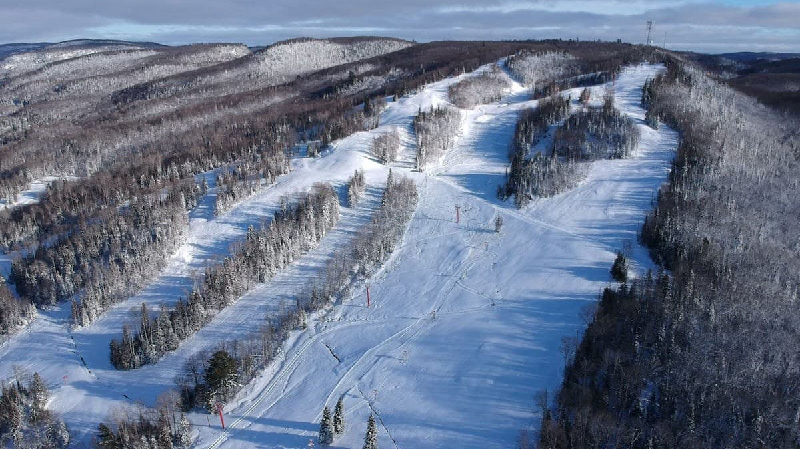

The best thing about skiing at Searchmont Resort is that
although there is only 18 ski runs, each run is entirely unique and
feels different to all the others. The terrain park is worth the visit
to – it has one of the best parks in all of Ontario. Located 25 miles
north of the town of Sault Ste. Marie, it’s not as conveniently
located to Toronto and Ottawa but it’s ideal for those wanting to
visit the Great Lakes or the US which is just across St Mary’s River.
It’s your classic ‘old-skool’ remote Canadian ski mountain that gives
you the chance to experience true mountain hospitality. You can meet
locals at rustic après ski bars where the beers are cheap and
plentiful. Seachmont is family friendly as well. The resort has ski
schools and beginner slopes in addition to the off-piste pursuits. On
top of it all, Searchmont has cheap lift tickets – $60CAD for adults
and $21CAD for kids under 10. Night skiing is available if you don’t
want to get off the slopes and can handle the cold.